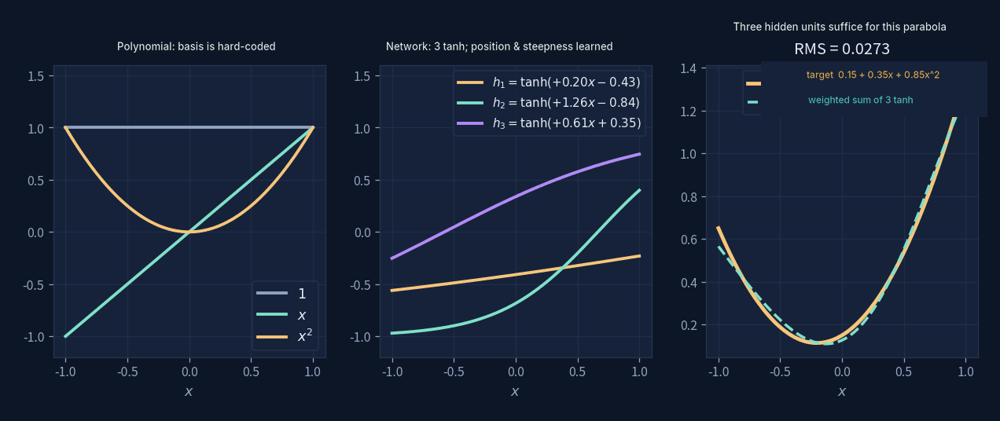
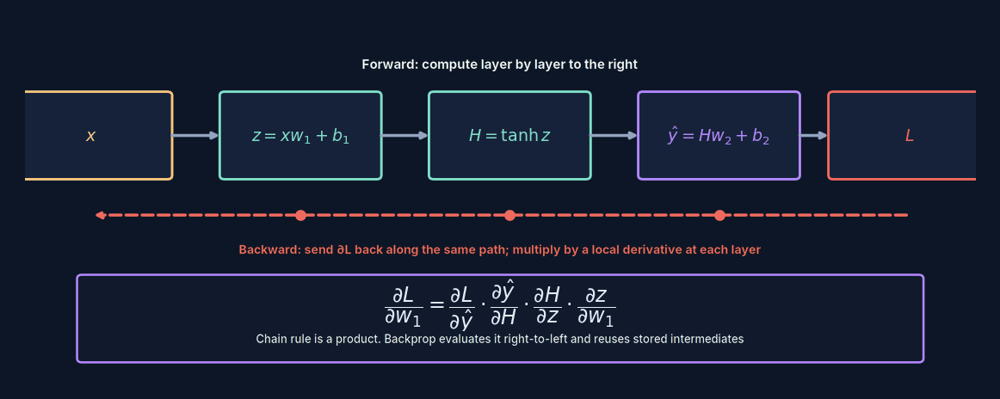
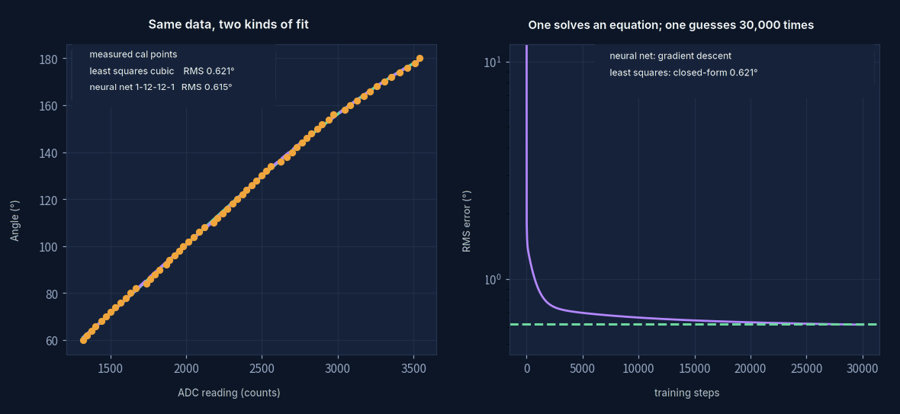

Neural Networks
A matrix, a bend, stacked over and over.
Everything the last five sections covered shows up here at once.
A matrix is a single linear transformation (Matrices & Transformations)
Minimising a loss means setting the derivative to zero or walking down the negative gradient (Change & Gradients)
Fitting means finding the closest point you can actually reach (Fitting & Least Squares)
A neural network introduces no new mathematics — it just stacks these three things, over and over.
What one layer actually does
Strip away every metaphor and one layer of a neural network does exactly two things:
first an affine transformation, then bend it, element by element
The first step is what the matrices page already covered: $W$ sends the input somewhere else, $b$ shifts it. The second step, $\sigma$, is the activation function — $\tanh$, for instance — and it's the only source of nonlinearity in the whole thing.
Why that one bend has to be there
Because linear transformations stacked on top of each other are still just one linear transformation. $W_2(W_1x)=(W_2W_1)x$ — stack a hundred layers and the effect is identical to a single matrix. Without $\sigma$, depth accomplishes nothing. Only after the bend does stacking start producing anything new.
How this differs from fitting a polynomial

The fitting page used $1,\,x,\,x^2,\,x^3$ to fit the servo's calibration curve. Those four functions were chosen by you — every column of the design matrix $A$ was fixed in advance, and least squares only had to solve for their weights.
A network doesn't work that way. The three $\tanh$ curves in the middle panel — their steepness and position are also learned. Training doesn't just tune the final weighted sum; it tunes which basis functions get used in the first place.
Least squares: you fix the basis functions, it solves for the weights → a linear system, solved in one step
Neural network: it tunes both the basis functions and the weights → nonlinear optimisation, only solvable by trial and error
The right panel shows a quadratic pieced together from three weighted $\tanh$ curves, already down to an RMS of $0.027$. Three hidden units is enough — they aren't $1,x,x^2$, but they piece together the same effect.
Training: spreading the blame for the error

The forward pass is straightforward: $x$ goes in, gets computed layer by layer up to $\hat y$, and compared against the target to get a loss $L$.
The hard question runs the other way: to shrink $L$, which direction should that first-layer $w_1$ move? It sits several layers back from the output — its influence is indirect. The answer is the chain rule from Change & Gradients:
A string of multiplications. Backpropagation is running that string from right to left, caching the intermediate results along the way for the earlier layers to reuse — otherwise every parameter would have to redo the whole chain from scratch, at absurd cost.
Written as code it's only three lines, each matching one of those partial derivatives:
dY = 2*(yhat - y)/61 # ∂L/∂ŷ
dH = dY @ w2.T * (1 - tanh(z)**2) # times ∂ŷ/∂H, then ∂H/∂z
dw = x.T @ dH # times ∂z/∂w₁That $1-\tanh^2 z$ at the end of line two is the derivative of $\tanh$. Its maximum is 1, and it drops toward zero fast at both ends — stack a few dozen layers and multiplying that many numbers under 1 together leaves almost nothing by the time the gradient reaches the front. That's vanishing gradients, and part of why ReLU later replaced $\tanh$ in most architectures.
Four ideas
Activation Function
- What it is
- A nonlinear function applied element-wise: $\tanh$, ReLU, sigmoid.
- Why it has to be there
- It's the only source of nonlinearity in the whole network. Remove it and any number of layers collapses back into a single matrix — the same expressive power as one linear regression.
- Where it sits
- It's exactly what makes "learnable basis functions" possible in the first place — where the bend sits and how steep it is is decided by $W,b$, and $W,b$ are what training solves for.
- The cost of choosing badly
- $\tanh$'s derivative vanishes at both ends, so deep networks lose the gradient; ReLU's derivative is exactly 0 for negative input, so a neuron can "die" and stop updating altogether.
Backpropagation
- What it is
- Running the chain rule from output back to input, caching intermediate results along the way.
- What it isn't
- It's not a new method of differentiation — it's just the chain rule. The real contribution is that "cache and reuse" organisation, which keeps the cost of computing gradients roughly the same as the forward pass, instead of exploding with depth.
- Where it sits
- Modern frameworks call this automatic differentiation. You write the forward pass; the gradient is derived for you.
- Where it breaks
- If any single local derivative along the chain gets close to zero, every layer behind it stops receiving a usable signal.
Gradient Descent
- What it is
- $\theta\leftarrow\theta-\eta\,\nabla L$ — take one step in the direction the loss decreases fastest.
- The learning rate $\eta$
- Step size. Too large and you overshoot the valley and oscillate; too small and it takes forever. Drag the slider in the demo and watch the loss curve react directly.
- Where it sits
- It's the fallback for when "set the derivative to zero" can't be solved directly. Least squares solves in one step because the loss is quadratic in the parameters and its derivative is linear; a network's loss is nonlinear, so it has no choice but to feel its way downhill.
- Where it stops
- Wherever the gradient hits zero — which might be a minimum, or might be a saddle point or a local minimum. Nothing guarantees it's the global optimum.
Overfitting
- What it is
- The model has learned the noise in the training data along with the signal.
- How to spot it
- Training loss keeps dropping, but performance on new data gets worse. In the demo, push the noise slider up and let it train longer — the curve starts chasing individual noisy points.
- Where it sits
- More parameters make overfitting easier. On the servo calibration page, going from 3rd to 4th order bought almost nothing — that flat line was the model telling you to stop. Any more coefficients would just be fitting noise.
- The flip side
- Too few parameters and the model can't even express the real pattern — underfitting. There's no formula for the trade-off between the two, only judgement.
Back to the servo: thirty thousand steps versus one

Same 61 real calibration points. Least squares solves a linear system, one step, 0.621°. A small network runs gradient descent for thirty thousand epochs and reaches 0.615°. Almost tied.
How to read that result
It's not that the network is useless — it's that when you already know what
shape the curve should be, writing that shape into the model beats letting a network
guess it. A potentiometer's voltage-divider response was always going to be
low-order and smooth; three or four coefficients describe it fine, and least squares
solves for them in one step with a uniqueness guarantee thrown in.
Networks earn their keep where you don't know the shape — images, speech,
language, places where nobody could write down what the "basis function" should
even look like.
One more thing worth noticing: both methods get stuck around $0.6°$ and go no further. They're running into the same ceiling — the fingerprint that $2.07°$ of mechanical backlash leaves behind in the data. Changing the model can't fix a mechanical problem.
- Build · Servo Calibration
Where the data came from - Back to · Fitting & Least Squares
One-step solution
One sentence
A neural network isn't a new branch of mathematics.
It's matrices, derivatives, and fitting — three familiar things, stacked many layers deep.
What makes it powerful isn't mathematical depth — it's that past a certain scale, "find your own basis functions" starts to beat "let a person choose them for you."